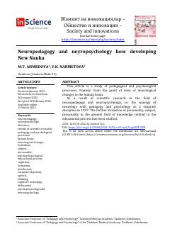

NVNeyropedagogika va neyropsixologiyaning ta'lim jarayonidagi ahamiyati va ilmiy asoslari haqida maqola.
Ushbu maqola neyropedagogika va neyropsixologiya fanlarining ta'lim jarayonidagi o'rni hamda inson bosh miyasi faoliyati bilan bog'liq pedagogik jarayonlarni tahlil qiladi. Mualliflar o'quvchilarning psixofiziologik xususiyatlarini hisobga olgan holda ta'lim berishning ahamiyati va bu sohadagi ilmiy yondashuvlarni yoritib berishadi.